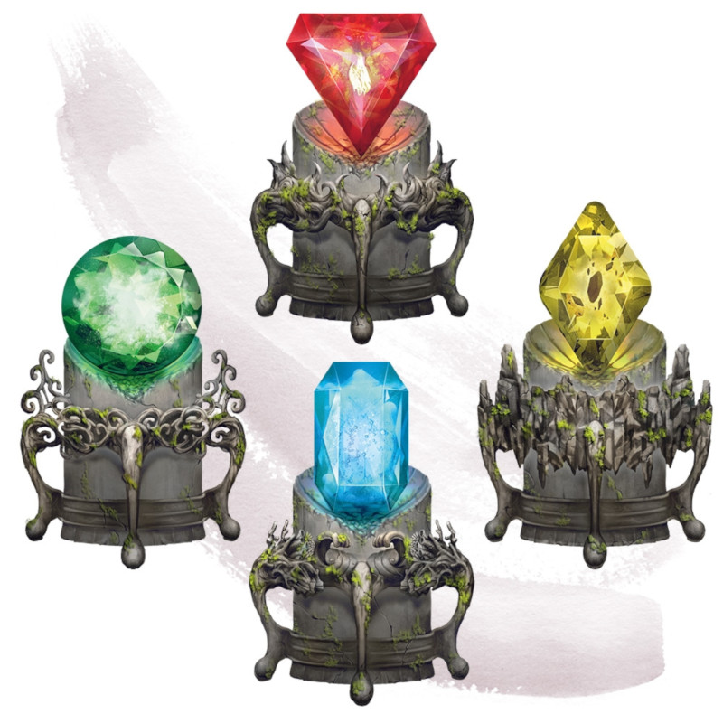

Elemental Gem
Wondrous item, uncommon
This gem contains a mote of elemental energy. When you use an action to break the gem, an elemental is summoned as if you had cast the conjure elemental spell, and the gem's magic is lost. The type of gem determines the elemental summoned by the spell.
| Gem | Summoned Elemental |
|---|---|
| Blue sapphire | Air elemental |
| Yellow diamond | Earth elemental |
| Red corundum | Fire elemental |
| Emerald | Water elemental |
Dungeon Master´s Guide (SRD)
